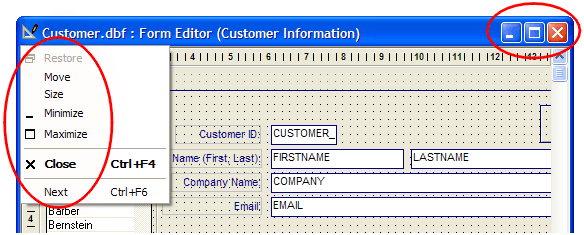

Disabling the Maximize and Minimize Buttons
Disabling the maximize, minimize, and other window menu functions prevents the user from closing or resizing it. The following procedure disables the functions circled in red.

Open the form in design mode.
Select Form > Form Properties.
Display the Window tab of the Form Properties dialog box.
Optionally, clear Sizable, System menu, Minimize button, and Maximize button.
Display the Menus/Toolbars tab.
Select "
" under Menus View and Menus View right click. Click OK and save your design changes.
See Also
Restricting Commands, Setting a Form's Title, Size, and Position
Supported By
Alpha Five Version 5 and Above